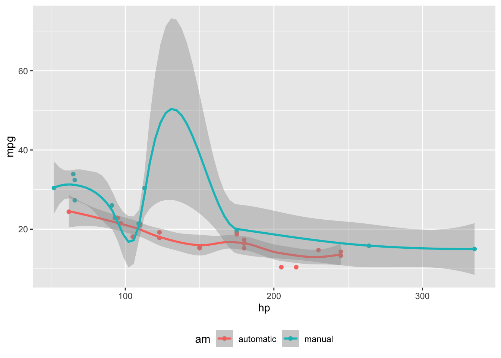

Quarto supports a variety of page layout options that enable you to author content that
- Fills the main content region
- Overflows the content region
- Spans the entire page
- Occupies the document margin
This post will demonstrate a few of the capabilities for positioning content in the margin of the page. You can read more about the complete capabilities in the the Article Layout Guide.
Margin Figures
Figures that you create using code cells can be placed in the margin by using the column: margin code cell option. If the code produces more than one figure, each of the figures will be placed in the margin.
```{r}
#| label: fig-mtcars
#| fig-cap: "MPG vs horsepower, colored by transmission."
#| column: margin
library(ggplot2)
mtcars2 <- mtcars
mtcars2$am <- factor(
mtcars$am, labels = c('automatic', 'manual')
)
ggplot(mtcars2, aes(hp, mpg, color = am)) +
geom_point() + geom_smooth(formula = y ~ x, method = "loess") +
theme(legend.position = 'bottom')
```
Margin Tables
You an also place tables in the margin of your document by specifying column: margin.
```{r}
#| column: margin
knitr::kable(
mtcars[1:3, 1:3]
)
```| mpg | cyl | disp | |
|---|---|---|---|
| Mazda RX4 | 21.0 | 6 | 160 |
| Mazda RX4 Wag | 21.0 | 6 | 160 |
| Datsun 710 | 22.8 | 4 | 108 |
Other Content
You can also place content in the margin by targeting the margin column using a div with the .column-margin class. For example:
::: {.column-margin}
We know from *the first fundamental theorem of calculus* that for $x$ in $[a, b]$:
$$\frac{d}{dx}\left( \int_{a}^{x} f(u)\,du\right)=f(x).$$
:::We know from the first fundamental theorem of calculus that for \(x\) in \([a, b]\):
\[\frac{d}{dx}\left( \int_{a}^{x} f(u)\,du\right)=f(x).\]
Margin References
Footnotes and the bibliography typically appear at the end of the document, but you can choose to have them placed in the margin by setting the following option[^1] in the document front matter:
---
reference-location: margin
citation-location: margin
---With these options set, footnotes and citations will (respectively) be automatically be placed in the margin of the document rather than the bottom of the page. As an example, when I cite Xie, Allaire, and Grolemund (2018), the citation bibliography entry itself will now appear in the margin.
Asides
Asides allow you to place content aside from the content it is placed in. Asides look like footnotes, but do not include the footnote mark (the superscript number).
aside which places it in the margin without a footnote number.[This is a span that has the class aside which places it in the margin without a footnote number.]{.aside}Margin Captions
For figures and tables, you may leave the content in the body of the document while placing the caption in the margin of the document. Using cap-location: margin in a code cell or document front matter to control this. For example:
```{r}
#| label: fig-cap-margin
#| fig-cap: "MPG vs horsepower, colored by transmission."
#| cap-location: margin
library(ggplot2)
mtcars2 <- mtcars
mtcars2$am <- factor(
mtcars$am, labels = c('automatic', 'manual')
)
ggplot(mtcars2, aes(hp, mpg, color = am)) +
geom_point() + geom_smooth(formula = y ~ x, method = "loess") +
theme(legend.position = 'bottom')
```